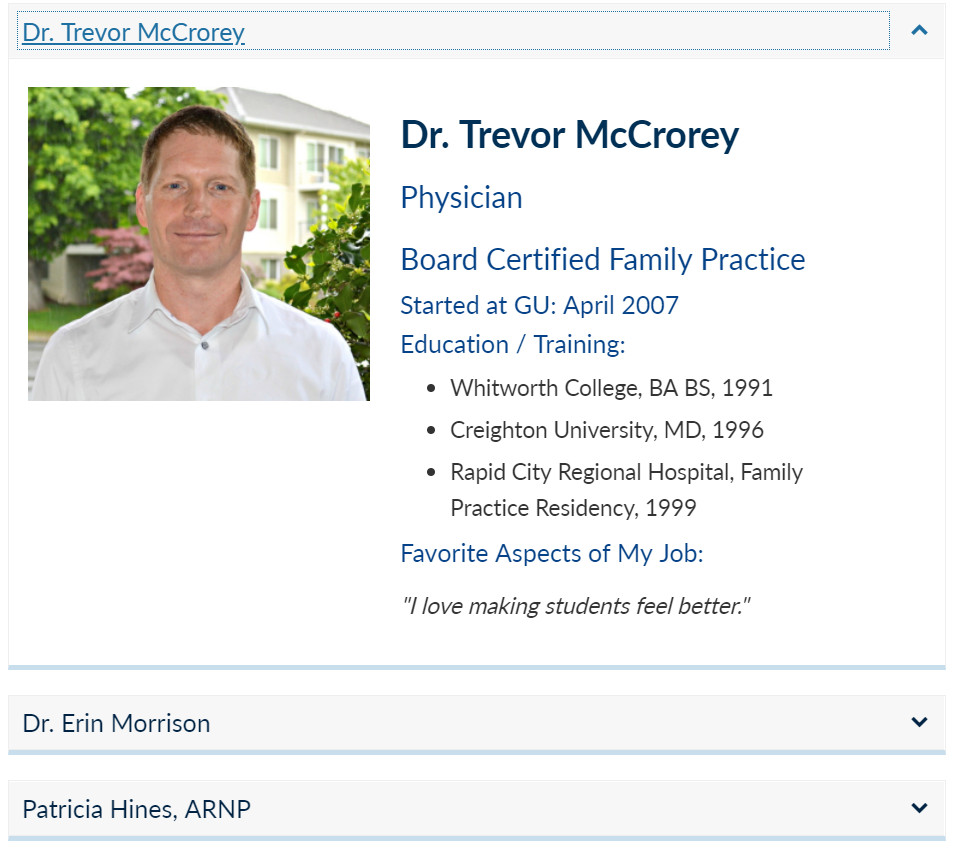
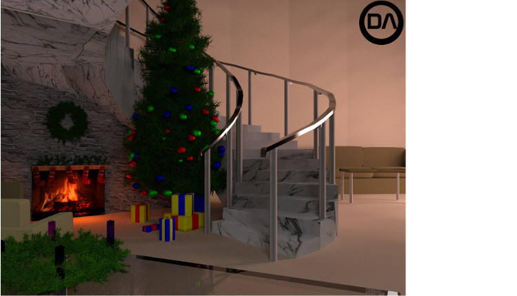
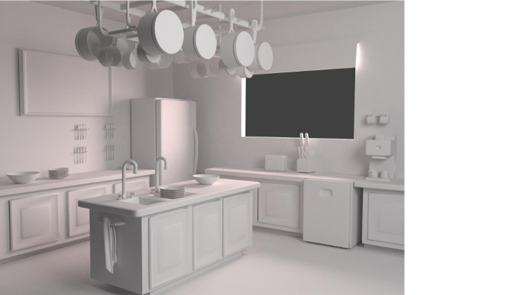

Thank you for visiting my portfolio. At the risk of being a bit cliché, I decided to break my work into two halves based on the division of the brain. The left half discusses my work in engineering and UX design, while the right half covers the various creative activities I spend my free time doing. A few of my academic projects are demonstrated here, as well as my work experience and side projects.
NaukNauk is a very exciting project for me. The concept of an office hour scheduling app came while my friend and I were complaining about the difficulty of navigating the Gonzaga website, as well as the individual websites some professors have. Both CS students, we decided to use this concept as our assigned Android development project, however conceptual development began far before this assignment.
Recognizing our different talents, I began the task of building the UX for NaukNauk. Writing interfaces from the ground up is important to me, but it never comes easy. I started with integrating some of Google's Material Design elements in my own personal design philosophy. This pointed me in the direction I needed. We ended up implementing Google Firestore, instead of SQLite database, as we planned to, allowing live updates to the data.
Not having a lot of time for writing this app, a simple front-end experience demonstrated itself to be the number one priority. With this in mind, I designed a basic and intuitive interface that accomplished that task, entirely in XML, a language I am not too familiar with. I am happy with how it turned out, but as we continue adding features, keeping the interface simple will prove itself challenging.
My interest in web design began when I started a position for Gonzaga's Marketing and Communication department. Gonzaga was launching a new website, one that focused on accessibility and visual appeal, and they needed eight student employees. My position involved migrating content from the old site and adapting it to meeting these standards.
This position involved using SiteCore, the CMS used for managing the new site, as well as working directly in HTML. As my knowledge of these tools grew, my confidence of making design decisions grew. Ideas of how content should be organized filled my head. However, my position did not always allow for content to be changed like I wanted.
After the site launched in the Winter of 2017, I was chosen as one of the two student employees to continue working post launch. This new position, where I currently work, involves consulting with clients on improving the content organization. My communication and design skills are used to work with faculty and staff at GU, allowing me to implement my ideas for these pages.
I have included some screenshots of pages I wrote. The content is given from clients, while the styling in provided by the Marketing and Communication department. Working exclusively in HTML doesn't allow from much design freedom, with the accessibility goals of the site in mind. However, working with bootstrap can help create some interesting pages.
My first experience working with writing GUI's was in a OOP class, where we had two weeks to write a functional game we designed, similar to Yahtzee, in Java. We also had to implement a GUI for the game, entirely in Swing. Which was a real challenge.
Given the small time-frame for this project, I decided to explicitly define the pixel coordinates for each component. I wanted the user to have an intuitive experience working with the game, so I tried to organize the components like a real game of Yahtzee would be laid out on a table.
In high school, my passion was in 3D rendering. I spent hours in Blender, an open-source software that I'm still proficient in to this day. Around 2014, I started leaning more towards software development as my main hobby, but I still enjoy working in the software for simple rendering or modeling objects for 3D Printing. It taught me elements of photography, material design, image manipulation, and other skills I still use in my career to this day.
 In late 2016, I realized my passion for music, especially composition. This began when I started taking classes in Guitar, Piano, and Music theory. While I have yet to finish a complete song, my abilities to write music, utilize music-production software, and experiment on synthesizers are getting better and better. I don't expect myself to pursue music as a career, but I will never stop expanding my knowledge and skills.
I have included a fragment of a solo-piano piece I composed. It is not finished, but I think it has potential and I am looking forward to completing it.
I have also started DJ'ing parties. I had a lot of misconceptions about what that would entail when I started, but the more I learn about music genres, and how to tell a story while performing, the more I enjoy doing it. Music has such a powerful effect and I am excited to see where a life of learning, playing, and writing music will take me, even just as a hobby.
I have always loved cooking and as someone who needs to eat for the rest of life, I am incredibly excited to continuously education and refine my skills of the culinary arts.